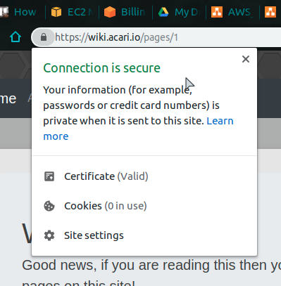
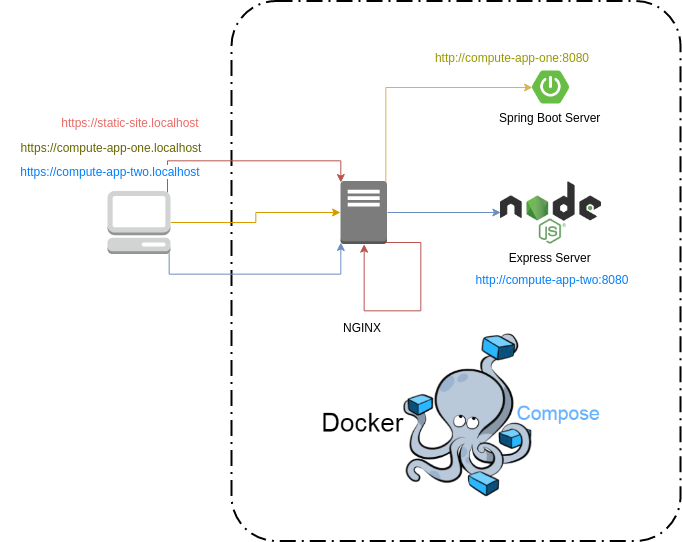
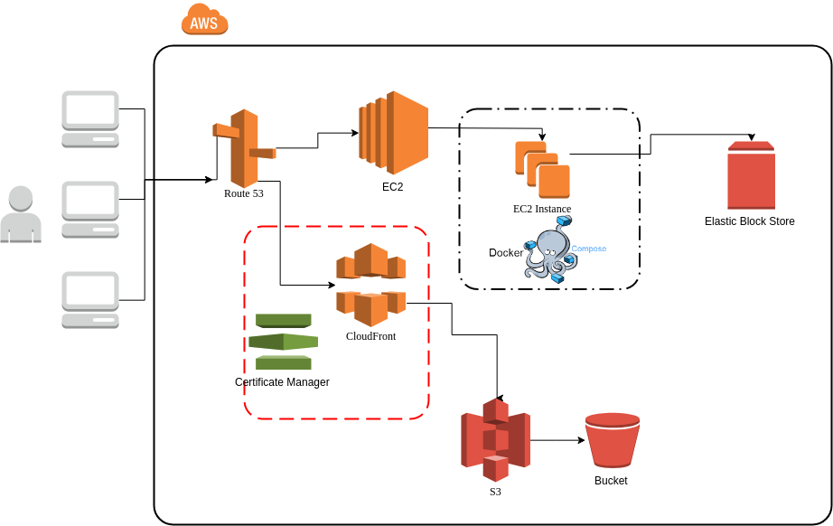

The Frugal AWS Developer
How to go to production on a budget
Presented by Alex Simons
What's in it for you?
Mimic a production like environment locally.
Deploy to your own production without OpenShift.
Basic working knowledge AWS and some DevOps techniques.
Minimize the amount of costs you will be responsible to pay.
What is Production like?
It's great, you should try it sometime!
Good production environments have these traits:
Secure Network Traffic
The application is accessible from HTTPS.
Any HTTP URL is redirected to HTTPS.
eg http://google.com becomes https://google.comSSL Certificates are Valid and Trusted.
Now for somethings you do not want
Just HTTP
._.
Invalid Certificates 😱

They could be expired or for the incorrect domain
You really do not want this either!
I'll cover to avoid both of these at no monetary cost to you!
Next Production Trait
Sub-Domain Support
Things like google.com are the main domain
While there are also other sites tied under the same domain Such as docs.google.com and drive.google.comhttps://google.com:3000/index.html
Have you ever really done anything this before, like ever?
Then why is it you always see things like these: localhost:3000 or localhost:8080, when developing locally??
How do I not do this?
Well, if you already have this down then good for you!
However, if you do not know, most websites that run on HTTP default to port 80 (eg http://localhost:80 and http://localhost are the same).
The same applies for HTTPS and port 443
I'll cover the whole port 3000 and 8080, in a bit.
Next Prod Trait
Graceful error handling
No body likes this
Make it something fun!
Be sure to address maintenance windows

Next Prod Trait
Respond quickly
- Succeed Immediately
- Fail Fast
Last (but not final) trait of Prod
Path Support
What does this mean?
If I were to put a url into the browser address then, I expect to take me to the content that I was viewing at the time.
If I put
https://learn-functional.unthrottled.io/reactive/explanations/why
into my browser address, it better take me to the page that I was viewing when I copied that url.
So how do I do all of that stuff?

How you really should start.
- Organize all of your projects.
- Install Docker on your local machine
- Acquire free AWS Account
- Combine the above
- Profit!
Organize your projects
Group them by category
- Static Content
- Web Services
Static Content
Just a simple html based application that may or may not have a corresponding backend/REST API
Web Services
Projects that run on/are servers and normally are accessed from localhost:8080 or something like that.
These may or may not serve static content as well
The distinction between these two categories is the amount of $$ you will spend
Enter Docker
In the end, Docker is going to be doing most of the heavy lifting to prod

Things Docker will do for us
- Service Provider
- Secure Network Communication
- Uniform Platform Provider
Service Provision
Easily provides things like: Databases, Message Queues, Content Servers.
Which support our Web Services
All without having to install any other software
Once it works on your machine, then it works in production (provided your compute instance has Docker and made minor tweaks)
Secure Network Communications
All services communicate, on their own special network, with each other.
So there is not much need to maintain SSL between Docker processes
Uniform Platform Provider
I can develop on a MacBook and deploy to prod on a Linux server and it will all work the same.
Docker is supported on most major Operating Systems
- Mac Hardware 2010 or newer
- Windows 10 Pro
- Ubuntu
- Centos
- RHEL/SLES (Enterpise Linuxes)
Strategy
Establish Local Architecture
Execute Local Architecture
Establish AWS Architecture
Execute AWS Architecture
Local Strategy
Local Execution
There will be a total of 3 websites
A React Web Application
A Spring Boot Application
A Express Application
Entry point
The entry point to all of our applications will be the NGINX server
All Client-Side communications will be in HTTPS
What is NGINX?
NGINX is open source software for serving static content, proxying requests, and more things.
Static content and proxying are just the ones focused on right now.
NGINX Configuration
Self-Signed certificates can be used for the initial HTTPS set up. Which will later be replaced by free, trusted Let's Encrypt certificates.
The use of Host-Headers will allow NGINX to proxy requests based off of the domain supplied. Allowing for a single server to handle requests for many domains.
NGINX Configuration Cont.
The server will also handle all graceful failure pages that the user may see while interacting with your domain.
The React Application
Will be accessible from https://static-site.localhost
The static content will be served by the NGINX server
The Spring Application
Will be accessible from
https://compute-app-one.localhost
The static content will be served by the Spring Boot app via the NGINX proxy server.
The NGINX server will access the spring boot server via the Docker supplied host name: compute-app-one
The Express Application
Will be accessible from
https://compute-app-two.localhost
The static content will be served by the Express app via the NGINX proxy server.
The NGINX server will access the spring boot server via the Docker supplied host name: compute-app-two
Local Execution
AWS Strategy
AWS Execution
There will be a total of 3 websites
A React Web Application
A Spring Boot Application
A Express Application
Entry point
This will be the Route 53 Service
All Client-Side communications will remain in HTTPS
Route 53
This service is responsible for routing all of your network traffic across your hosted zone
such as example.com
This service will cost you $0.50 a month to run a hosted zone. Plus a annual cost for domain renewal, which depends on what you choose ($12.00 a year for .com)
EC2
Elastic Cloud Compute for our servers, this service will run our compute apps and NGINX. While Elastic Block Store (EBS) will save our instances data to a file system.
Super easy instance setup for Docker CE can be found here.
EC2 Continued
EC2 is the most expensive service you will be interacting with.
It cost under $10 a month for a single micro instance to run. You will also pay just under $3.00 for CloudWatch (which is a logging service).
NGINX Configuration
HTTPS Certificates will be the free, trusted Let's Encrypt certificates created to your hosted zone. Provided by the CertBot "Route-53 verification plugin".
The use of Host-Headers will allow NGINX to proxy requests based off of the domain supplied to the corresponding service.
The host headers will have to be different now that it will be running under an actual domain. So https://compute-app-one.localhost will turn into https://compute-app-one.sample-domain.com
NGINX Configuration Cont.
The most easy way to get your Let's Encrypt Certificates will be by running the certbot on your local machine.
This will require the AWS cli and access credentials to your account to be set up.
This could require for you to have Private Docker Image Repositories. Which will run you $7.00 a month and gives you 6 Private Repositories. Or you could just go Hardcore mode and get your certs on your EC2 instance via SCP and build your image locally.
The Spring Application
The Express Application
Will remain the same as the local setup
The React Application
Be served by CloudFront
Certificates will be provided by the Certificate Manager at no charge to you!
Cloud Front
Is basically a CDN for your static content
All of your content will be put on servers closer to your users, so faster response times!
Cloud Front Continued
CloudFront will be fed by S3, which is just a remote file system.
Since CloudFront caches your static content. Whenever you want to release new code you have to invalidate those caches. This could cost you upwards of $0.1 a month, though I have never exceeded $0.02.
You could also wait until it expires in cache and save your money.
AWS Cost Breakdown
- Route 53: $1.50/month
- EC2: $0/month
- EBS: $0/month
- CloudWatch: $0/month
- Certificate Manager: $0/month
- CloudFront: $0.10/month
- S3: $0.0/month
Free AWS Services for a Year!
For the Extremely motivated
You can support your own prod for about $2.00 a month
After a year you are looking at about $15 a month
Recap
How to mimic a production like environment locally.
Deploy to your own production without OpenShift.
Get basic working knowledge AWS and some DevOps techniques.
How to minimize the amount of costs you will be responsible to pay.
THE END
- To see my production setup.
- Source code from this presentation
- Slides in website format.